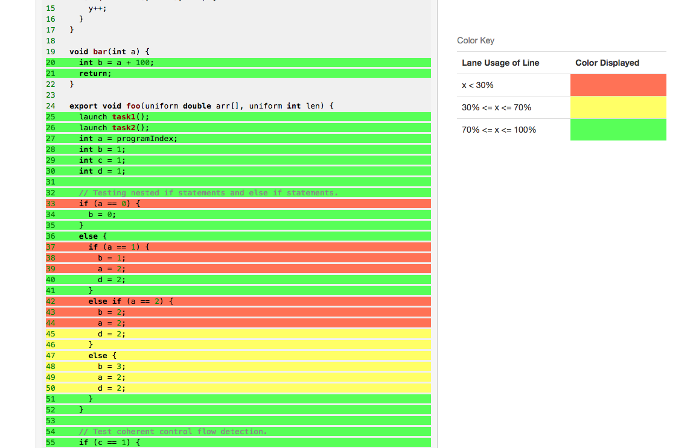
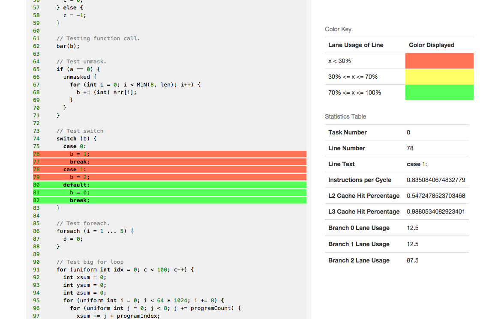
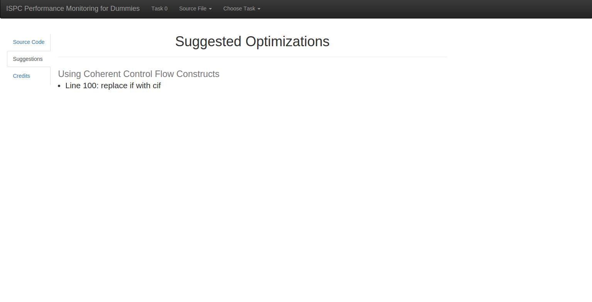
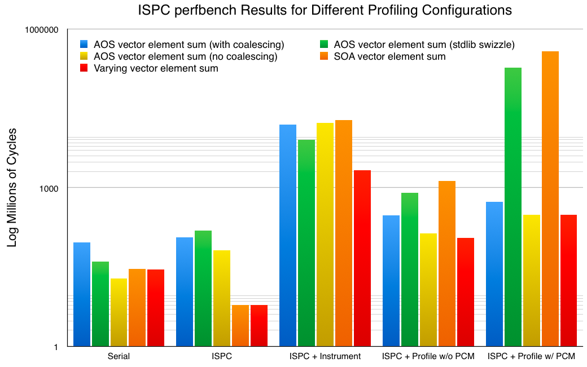

ISPC Performance Monitor for Dummies
Stephen Choi, Kevin Ku
May 8, 2015
Summary
In this project, we implemented a new set of features for the Intel ISPC Compiler to enable programmers to profile their programs compiled with the compiler. We aim to achieve the following goals:
- Implement a profiling mechanism with minimal footprint on the programs being profiled.
- Present a simple interface to minimize the amount of effort from the programmer.
- Collect detailed information including SIMD lane usage and cache hit rate at source line granularity.
- Give the programmer control over the type of information to be collected by the profiler.
- Create an intuitive graphical interface for the developer to find performance bottleneck in the code.
- Automatically suggest optimizations listed in the ISPC Performance Guide to the programmer.
Background
Single Instruction, Multiple Data (SIMD) execution is a hardware optimization that allows for a single core on a processor to execute the same instruction(s) on different data in parallel. More specifically, instructions are broadcast to all Arithmetic Logic Units (ALUs), each working on a different piece of data. Masks are used to prevent certain ALUs from executing instructions when a control flow statement is encountered. The more ALUs masked, the lower the instruction stream coherence and thus, the lower the performance. SIMD divergence is when there is a lack of coherence. An example would be if we were running if (x % 2 == 0) on contiguous values of x. Half our lanes would be doing meaningful work while in the body of the if statement but the other half would not.
Intel SPMD Program Compiler (ISPC) is a compiler focusing on optimizing SPMD (Single Processor Multiple Data) programs by taking advantage of SIMD execution in its implementation. To describe it abstractly, programmers can specify a "task", or an ISPC function, to be launched. This will result in a "gang" of ISPC "program instances" to be spawned, which are expected to run in parallel on a single core. The number of program instances per gang is equal to the SIMD width of the core and performance is heavily dependent on SIMD coherence. In addition, multiple tasks can be launched to take advantage of multi-core execution.
We note that the ISPC compiler already includes a mechanism for programmers to instrument their code. However, it does not provide very detailed statistics about the program and lacks fine grain control over the type of statements to profile. It also requires programmers to supply their own implementations of the instrument function, which can be very inefficient. Lastly, there does not exist tools that can help the programmer to comprehend the information extracted from instrumentation.
Approach
In order to minimize the profiler's footprint, we made the observation that SIMD divergence only occurs at control flow statements such as if, switch, and for. Therefore, we introduced the concepts of profile contexts and profile regions. A profile context is defined over a set of lines in the source code that the programmer wants to profile. Every control flow statement in that set is a profile region for the profile context. The programmer only needs to declare the start and end of a profile context and the type of profile regions to profile. The compiler takes care of generating code to profile every profile region and to track all function calls or task launches. This set up allows the programmer to easily control where he wants to profile and minimizes the amount of information we must gather to accurately portray the program's performance.
We forked the official ISPC repository to implement the profiling mechanisms. For every control flow statement, we modified the compiler to emit calls to our profiling functions as the program enters or leaves the block. The profiling functions are automaticaly linked in by the compiler upon generating the object files for the user.
Since the compiler must generate the lane masks for the vector instructions and is aware of the current position in the source file, we are able to get lane usage information and source line directly from the compiler. In addition, we also recorded the initial lane mask upon entry into each profile region. Doing so allows us to calculate lane usage of the region relative to the number of lanes initially available to the region instead of the overall vector width. This handles situations such as when the user calls a function inside a control flow statment, causing the function to be entered with a partial mask.
To get other information such as cache hit rates, we used the Intel Performance Monitor (PCM). Upon entry into a profile region, we record the performance counters reported by PCM and compare them to the counters upon exiting the region to obtain the desired statistics. Note that this limits our profiling mechanisms to running on Intel CPUs. In addition, PCM incurs significant overhead to the profiler (see Benchmarks section for details), so we've included an option to disable it when the programmer declares the profile context.
A note on cache hit ratio: The profiler needs to save the system counter state reported by PCM upon entering a region. Therefore, the cache hit ratios reported will not be purely for the program being profiled. However, the profiler makes a minimal amount of memory accesses after obtaining the system counter state, so the ratios will still be reflective of the program's actual performance.
To track usage across different tasks, we provided an implementation of the task system based on the default task system provided by the ISPC project. Our implementation uses a pool of pthreads to implement tasks and allows us to identify task launched within a profile context.
The programmer can easily enable profiling by compiling his program with the --profile flag. A profile context can be defined by wrapping a C++ call to an ISPC function with a macro as follows:
...
ISPC_PROFILE_BEGIN(ISPC_PROFILE_ALL)
[call ISPC function here]
ISPC_PORFILE_END
...
No special includes, libraries, or extra code is required from the programmer. We have the following flags to control the behavior of the profiler, which can be combined using bit-wise OR:
ISPC_PROFILE_IF
ISPC_PROFILE_LOOP
ISPC_PROFILE_FOREACH
ISPC_PROFILE_SWITCH
ISPC_PROFILE_FUNCTION
ISPC_PROFILE_PCM
ISPC_PROFILE_ALL // Profile all regions with PCM enabled
ISPC_PROFILE_ALL_NO_PCM // Profile all regions without PCM
The profiler outputs the profile data into JSON files at the end of the program's execution. These files can then be uploaded to our visualizer for the programmer to visualize the performance bottlenecks. The visualizer allows the programmer to see SIMD lane usage on a line by line basis, along with information on cache hit ratio and instructions per cycle. The lines are color coded based on lane usage to give a very intuitive sense of the programs' performance. We've also written a suggestion engine that will give performance improving suggestions listed in ISPC Performance Guide based on the profiled data.
Demo
Here is a walkthrough of running our profiler on a very simple ISPC program (alternatively, you can try out a live version here!). We have 2 source code files, test.cpp and foo.ispc. The programmer compiles the code with --profile flag.
test.cpp
#include "foo_ispc.h"
using namespace ispc;
int main() {
double arr[1000000];
ISPC_PROFILE_BEGIN(ISPC_PROFILE_ALL)
foo(arr, 1000000);
ISPC_PROFILE_END
return 0;
}
foo.ispc
#define MIN(a, b) ((a) < (b) ? (a) : (b))
task void task1() {
foreach (i = 1 ... 1000) {
int y = 0;
for (int x = 0; x < i * 2; x++) {
y++;
}
}
}
task void task2() {
uniform int y = 0;
for (int x = 0; x < 5; x++) {
y++;
}
}
void bar(int a) {
int b = a + 100;
return;
}
export void foo(uniform double arr[], uniform int len) {
launch task1();
launch task2();
int a = programIndex;
int b = 1;
int c = 1;
int d = 1;
// Testing nested if statements and else if statements.
if (a == 0) {
b = 0;
}
else {
if (a == 1) {
b = 1;
a = 2;
d = 2;
}
else if (a == 2) {
b = 2;
a = 2;
d = 2;
}
else {
b = 3;
a = 2;
d = 2;
}
}
// Test coherent control flow detection.
if (c == 1) {
c = 0;
} else {
c = -1;
}
// Testing function call.
bar(b);
// Test unmask.
if (a == 0) {
unmasked {
for (int i = 0; i < MIN(8, len); i++) {
b += (int) arr[i];
}
}
}
// Test switch
switch (b) {
case 0:
b = 1;
break;
case 1:
b = 2;
default:
b = 0;
break;
}
// Test foreach.
foreach (i = 1 ... 5) {
b = 0;
}
// Test big for loop
for (uniform int idx = 0; c < 100; c++) {
int xsum = 0;
int ysum = 0;
int zsum = 0;
for (uniform int i = 0; i < 64 * 1024; i += 8) {
for (uniform int j = 0; j < 8; j += programCount) {
xsum += j + programIndex;
ysum += 8 + j + programIndex;
zsum += 16 + j + programIndex;
}
}
}
}
Using our visualizer, the programmer can easily get an overview of the lane usage statistics in the program.
Clicking on specific lines in the source code displays detailed information about the profile region that line is in.
The programmer can also easily switch between source files and tasks, as well as view optimizations that are automatically suggested by our profiler.
Benchmarks
We ran the benchmarks provided as part of the ISPC project to assess the performance impact of our profiler compared to the original ISPC code as well as code instrumented with the extremely basic and un-optimized instrumentation function included in the ISPC project. Here's the spec of the machine where we ran the tests on:
- CPU: Intel Core i7-4790 @ 3.6 GHz (1 socket, 4 cores, 2 threads per core)
- L2 Cache: 256 K
- L3 Cache: 8192 K
- RAM: 16 GB
- OS: Ubuntu 14.04.1
The first set of benchmarks we ran is perfbench, which is "a number of microbenchmarks to measure system performance and code generation quality". The first set of tests from the perfbench suite tests the performance of the code on compute intensive workloads such as Array of Struct (AOS) and Struct of Array (SOA) element sum. We note that our profiler without PCM enabled is between 2x - 218x slower than the un-profiled ISPC implementation, and that our profiler with PCM enabled is 4x - 62492x slower than the un-profiled version. On the other hand, the basic instrumentation function is 52x - 3114x slower than the un-profiled ISPC version.
Upon inspecting the code of the benchmark suite, we found the major contributor to the dramatic slow-down that we see: nested loops. Since each loop is a profile region, nested loops means that we are constantly entering and leaving regions, thereby incurring a large overhead in keeping the internal data structures updated. When PCM is enabled, this effect is even more dramatic since every region entry requires saving the system counter states.

The second set of tests from the perfbench suite tests the performance of the code on memory intensive workloads. We note that our profiler without PCM enabled is between 5x - 28x slower than the un-profiled ISPC implementation, and that our profiler with PCM enabled is 6x - 39x slower than the un-profiled version. On the other hand, the basic instrumentation function is 412x - 2246x slower than the un-profiled ISPC version.
We also ran the aobench suite, which is a "small Ambient Occlusion renderer program which is suited for benchmarking processor/language's floating point computing power" (source). We generated images of 3 different size: 50x50, 100x100, and 200x200. Again, compared to the un-profiled ISPC code, we see around 64x - 170x slow down of the profiled version without PCM and around 650x - 1347x slow down for profiled version without PCM and but with tasks. On the other hand, there is around 431x - 1198x slow down for the instrumented version and around 2380x - 5023x slow down for the instrumented version with tasks.